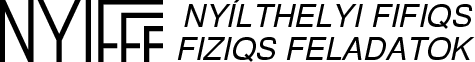
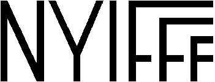

Unod a zárthelyiket? Gyere velünk nyílt helyre!
Feltámad poraiból, és újra elfoglalja a Balaton partját / vizét / hegyoldalait a

A világ legszebb helyén, a természeti szépségekben és fizikai jelenségekben bővelkedő Szigligeten, egy ifjúsági tábor kellemes faházaiban / mellett / mögött / fölött, a Badacsonyra és a Balatonra néző teraszon elfogyasztott, a barátságos helyiek által prezentált bőséges és ízletes reggeli / ebéd / vacsora között / előtt / után / közben / stb, a szigligeti vár, hajókikötő és strand intenzív látogatása, használata és fizikai elemzése közepette, a ragyogóan napos / csillagos balatoni ég alatt / fölött fogtok érdekes és izgalmas kísérleti és elméleti feladatokkal, ötletekkel foglalkozni, és kipróbálni, milyen nagyszerű érzés az, amikor a halvány ötletcsírából valóságosan működő / megmérhető / mozgó / pöfögő / robbanó / stb szerkezet alakul / nem alakul ki eszetek / kezetek / stb munkája nyomán.
Ebben az utánozhatatlan és pótolhatatlan élményben részesülhet az, aki 3‒5 fős csapatával benevez a NYIFFF-re, eljön velünk Szigligetre, és megérti / megmagyarázza / megváltoztatja / megváltja a fizikai világot, vagy legalább egy részét...
A verseny időpontja: 2026. május 15. (péntek) ‒ május 17. (vasárnap)
Helyszín: Szentesi Ifjúsági Tábor, Szigliget, Külsőhegyi út 66. térkép másik térkép
Jelentkezhetnek 3-5 fős, egyetemistákból (részben esetleg középiskolásokból), barátaikból, rokonaikból és üzletfeleikből álló csapatok, valamint szurkolók is.
Jelentkezési határidő: május 7. csütörtök 23:59
A jelentkező csapatoknak előfeladatokat is meg kell oldaniuk: link az előfeladatokhoz
Technikai információk és jelentkezés: link a jelentkezéshez
Mi az a NYIFFF?: link egy rövid összefoglalóhoz
Várunk minden fizikát / természetet / kihívást / balatoni bort kedvelő egyéni / csapatos jelentkezőt, mi több, a drukkereket is! NYIFFF-re fel!
a Bölcs és Pártatlan Zsűri